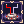
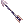
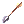
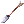
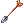
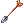

Secret Intel for Rangers by BlackIntels
| Message from BlackIntels | |
|---|---|
| As for 5th April 2021 I'm taking my indefinite hiatus. The content on this wiki will not be updated at all. Please ask in NovaCord #archer for more up-to-date informations. Dear Rangers, have fun on your journey on the best server on earth, NovaRO! |
| Job Base: | |||||||||||||||||||
| Written By: |  BlackIntels Artwork by Rox Kenway Rokishi#7334 | ||||||||||||||||||
| |||||||||||||||||||
Introduction
"The only 2 differences between the beginners and the experts are the amount of time they spent in the game, and the amount of information collected. And I'm here to share you The Secret Intels about being Ranger in NovaRO" -BlackIntels
If you are here to see my equip, then please click here to get there.
I'm starting a YouTube Channel regarding Ragnarok Online especially NovaRO. If you are interested in News, Tutorials, Tips & Tricks, and Random Talk about future Ragnarok Online / NovaRO contents consider checking my YouTube Channel here.
Opening Act
I swear I never intended this to be a guide. It's more like a place where I share all of my documentation of all my tests regarding Ranger in NovaRO. So I need to write this at the beginning. There are actually 2 parts of this guide:
- The BlackIntels PvE Ranger Guide "Sharp Shooting Ranger for Dummies" and '"Bio 5 Ranger for Dummies"
- This is the kind of information that I would like to read in late august 19' when I came back to NovaRO after my hiatus. Switching from Arrow Storm Build to Sharp Shooting, what is the Status Build, Beginner's EQ, slightly better EQ, the End-game build, and right at the end you will find my current Equipment. You can just scroll down to find this guide. This part was meant to be a recommendation, you might find something better if you want to test things out.
- The "Current Research Data Collected"
- Click here to get there by the way, this part is actually what I'm focusing on. "How do I get the best price value out of my equipment setup?", "Is buying a Blut Hase Card for 500m gonna be worth all the money?", "How much do I get if I evolution my High Orc to Orc Hero?", "What is the best pet with my setup?", and many more. A lot of information that might save you from buying a wrong thing, and having the headache of selling it again. I just wish this part gonna be a little guidance towards what you might get, NOT what you actually will get.
I'm no english native speaker by the way, and I never write anything in english as heavy as this one in my life, lul. So I hope that my weakness in english language doesn't stop you to get the information about Ranger and get the best out of your Zeny~ Enjoy your time !
Overview
Ranger is one of the best ranged class in Ragnarok Online. In the old time we have Falcon to company us during our hunts, but now we switched to "Warg". "Warg" is the new companion that Rangers have. It allow you to move faster than most classes in Ragnarok Online. The rather old skill  Arrow Storm is super helpful during early game, be it Leveling or Farming. Later on
Arrow Storm is super helpful during early game, be it Leveling or Farming. Later on  Sharp Shooting will make you truly shine among the other DPS in Ragnarok. I hate to say this but Ranger is not the #1 DPS anymore. We were the #1 DPS thanks to the rework of Sharp Shooting skills, but since RK / GX update, we are lacking behind them, making us #3 DPS. Thanks to the AoE-type skill Sharp Shooting we are still super helpful in end-game Farming Places like Bio5, Magma 3, and other instances hunt. The classic skill
Sharp Shooting will make you truly shine among the other DPS in Ragnarok. I hate to say this but Ranger is not the #1 DPS anymore. We were the #1 DPS thanks to the rework of Sharp Shooting skills, but since RK / GX update, we are lacking behind them, making us #3 DPS. Thanks to the AoE-type skill Sharp Shooting we are still super helpful in end-game Farming Places like Bio5, Magma 3, and other instances hunt. The classic skill  Ankle Snare is the biggest boost for the Ranger survivability.
Ankle Snare is the biggest boost for the Ranger survivability.
Important Skills
These are few of the skills that I find important for Rangers, but if you are interested in depth what are the complete skills of Archer / Hunter / Sniper / Ranger, I would like to recommend you to read more about Archer Branch Skills here.
Archer
| Skill | Note |
|---|---|
 Owl's Eye Owl's Eye
|
This both skills are self-explanatory, incease your attack range and DEX per Level |
 Vulture's Eye Vulture's Eye
| |
| Improve Concentration | Incease your AGI and DEX by certain % amount. This skill is super helpful even at end game |
 Double Strafe Double Strafe
|
Good single-target skill for beginning |
 Arrow Shower Arrow Shower
|
Good AoE-skill (Area of Effect) which allow you hit multiple monsters at a time for the purpose of leveling |
 Arrow Crafting Arrow Crafting
|
Allowing you to create your own arrows from materials. We have custom Arrow Seller NPC in Payon so no need to craft arrows by yourself, but I usually only use this skill to make Immaterial Arrow cause they are not buyable on this NPC |
Sniper
| Skill | Note |
|---|---|
| Sharp Shooting
|
Thanks to the rework, this transcendent Skill is our main skill as Damage Dealer. It has +50 base CRIT from the skill. AoE-style skill, spam-able and do critical damage is the biggest advantage of it. |
 Wind Walker Wind Walker
|
Increase Flee-Rate and Moving Speed to you and your party member, really helpful skill to move faster |
 True Sight True Sight
|
Huge boost to Hit, Damage, and Critical Rate. This skill is a must to be spammed when you are fighting anything |
| Ankle Snare
|
Immobilize monsters, if being stepped on. Increase your survivability, and make your Potion usage even lower, cause you can kill the monsters while they are unable to reach you |
 Skid Trap Skid Trap
|
Make your enemy move cells away depending on skill levels. This skill might sound stupid, but it's super helpful in cases like Monster Hunting 2, where your Ankle Snare is disabled |
 Blitz Beat Blitz Beat
|
Allowing your falcon to attack. Usually helpful in cases where you have to kill monsters that only take "1" damage, cause Auto-Blitz Beat gonna hit them multiple time, while you are auto attacking |
Ranger
| Skill | Note |
|---|---|
 Aimed Bolt Aimed Bolt
|
single-target type skill which is really unique and deals better damage than Sharp Shooting in 2 Star Monster Hunt. |
| Arrow Storm
|
Really strong skill for the purpose of leveling till lv 175. This skill made Ranger the best Damage Dealer in leveling phase, be it in party or solo cases |
 Camouflage Camouflage
|
Allowing you to stay "hidden" while moving and increasing your damage the longer you are in Camouflage. Really useful in places with no Boss / Demon / Insect Monsters |
 Unlimit Unlimit
|
One of your best skill. HUGE boost to your damage, but reducing your DEF and MDEF to 1 making you super easy to be killed. Make sure to stay alive during the duration |
 Warg Rider Warg Rider
|
Coupled with Wind Walk, this skill will allow you to move super fast anywhere you want to go |
 Warg Strike Warg Strike
|
Allowing your Warg to attack, and increase the damage too. Coupled with  Tooth of Warg it will boost the damage even higher Tooth of Warg it will boost the damage even higher
|
|  Trap Research | Worth getting to at least Lv.1 to get the +220 SP bonus |
Starting with Arrow Storm
So you finally changed your class to Ranger, but still with the lovely Eden Gear and don't know how to continue? My recommendation would be go to read How to Make Zeny with this Guide to allow you buy your White Wing Set and do Banquet of Heroes x Terra Gloria x Illusion Quest just until you hit lv 130 (minimum level for wearing Illusion 17.1 Set). I think if you autoloot all the item drops from the beginning, you can sell the unimportant drops with Merchant Class for Overcharge and you get the money to start. Arrow Storm build is totally fine till Gramps 145+.
- Throw away your Eden Bow and buy
 Hunter Bow
Hunter Bow @go payonand pair it with  Hunting Arrow - Buy 40x
 Mora Coin from market >
Mora Coin from market > @go mora> Exchange 40x Mora Coin to NPC "Master of Artifacts" for  White Wing Suit
White Wing Suit White Wing Manteau White Wing Boots
White Wing Manteau White Wing Boots White Wing Brooch
White Wing Brooch
Example Build for Arrow Storm
| Equipment Name | Position | Note |
|---|---|---|
| Sniper's Google | Headgear | Just use this default headgear for starting. Not so good, but still better than nothing. |
| Weapon | I would advice just start with Hunter Bow, and just keep using it till you can afford Thanatos Bow or any better bow. The reason behind that is this bow has a combo with Hunting Arrow that boost 50% ranged damage. Definitely a huge boost in damage. | |
| White Wing Suit
|
Armor |
In my opinion it doesn't really matter if you have this gears refined or not. I personally think I won't upgrade this nor enchanting it |
| White Wing Manteau
|
Garment | |
| White Wing Boots | Shoes | |
| White Wing Brooch
|
Accessories | |
 Sound Amplifier Sound Amplifier
|
Accessories | No damage boost, but 50% reduction on variable cast time will help you cast Arrow Storm faster.
|

Example Status Build for Arrow Storm Ranger Lv.108 :
| Stats | Allocated Base Points | Priority | Stats Effect | Note |
|---|---|---|---|---|
|
1 | Secondary | Extra Weight to carry items, and small boost in statusATK |
Primary means it should be your focus at the early game. You should invest most of your stats points to this, while Secondary means that you might not need it early on. I personally like to put a lot if INT and DEX early on and some to AGI. It's just with higher damage and faster cast you can deal way better damage. You don't really need ASPD, so getting low AGI should be fine. |
|
55 | Primary | Attack Speed and FLEE | |
|
12 | Secondary | MaxHP, and DEF | |
|
100 | Primary | Increase MaxSP, faster variable-casting-time, and SP recovery rate | |
|
100 | Boosts your Damage, ASPD (small bonus), faster variable-casting-time, Hit-Rate | ||
|
1 | Secondary | Extra crit chance, slight boost in damage |
Sharp Shooting Ranger for Dummies
Beginning
Changing from Arrow Storm (AS) Build to Sharp Shooting (SS) Build is a weird process. You'd gonna notice a lower damage per skill in the beginning. Cause without a proper Equip Sharp Shooting deals lower damage than Arrow Storm, BUT even with lower damage SS deals way higher damage in the long run, cause you are able to spam it like crazy, and the critical hit will definitely able to take care of high FLEE Monsters which AS unable to take care of.
| Pro | Cons |
|---|---|
|
|
Status Build
Changing from Arrow Storm build to Sharp Shooting build will require you to put some stats to other places. When pure AS Build doesn't require LUK, SS Build really need LUK for allowing you Critical Hit with Sharp Shooting. You will notice at the beginning sometimes your SS damage gonna spike, but then goes lower again. The reason behind this "spikes" are Sharp Shooting dealing Critical Hit which requires you to have high amount of LUK. I'm not focusing in detail what every stats gonna do, but if you are interested about the detailed description try read more about it in our Ranger general guide.
Example Status Build for Sharp Shooting Ranger Lv.185 :
| Stats | Allocated Base Points | Priority | Stats Effect | Note |
|---|---|---|---|---|
|
70 | Secondary | Extra Weight to carry items, and small boost in statusATK |
Primary means it should be your focus at the early game. You should invest most of your stats points to this, while Secondary means that in the early game you can put like 20-30 into those stats. |
|
100 | Primary | Attack Speed and FLEE | |
|
70 | Secondary | MaxHP, and DEF | |
|
97 | Increase MaxSP, faster variable-casting-time, and SP recovery rate | ||
|
120 | Primary | Boosts your Damage, ASPD (small bonus), faster variable-casting-time, Hit-Rate | |
|
100 | Extra crit chance, slight boost in damage |
- The Primary stats for beginning are AGI, DEX, LUK -> You might need 120DEX to utilize the fixed cast time reduction bonus of
 Temporal Boots Of Dexterity , this is also a reason why I'd rather recommend you to stay on AS Build before changing to SS Build. You wouldn't want a char with 120 DEX but only 15 AGI right? After that you can balance the AGI and LUK to what you really need
Temporal Boots Of Dexterity , this is also a reason why I'd rather recommend you to stay on AS Build before changing to SS Build. You wouldn't want a char with 120 DEX but only 15 AGI right? After that you can balance the AGI and LUK to what you really need - The least imporant stats are INT, VIT, STR -> As I said above, you can just put them at 20-30 for the beginning while focusing the stats up above
Skill Builds Example
| Job Skill Build | Note |
|---|---|
Archer |
|
Sniper |
|
Ranger |
|
Budget Equipment Setup
I know you must've already tried to use Sharp Shooting with your current White Wing Set, to realize the cast time is so slow. The reason behind this is because your current EQ is not suitable with SS Build (which requires 0.5sec fixed cast reduction). Talking about it, changing equip is the part of the problem here. If you break the White Wing Set, you'd lose extra ASPD and the Arrow Storm damage bonus and make you think twice if you should switch to SS Build. On the other side you might actually have some EQ that are usable on both AS and SS Build like  Gangster Scarf or
Gangster Scarf or  Sigrun's Wing. If you unable to buy any headgears for now, just stay with your Sniper's Google for a little more.
Sigrun's Wing. If you unable to buy any headgears for now, just stay with your Sniper's Google for a little more.
| Equipment Name | Position | Note |
|---|---|---|
|
|
Weapon | Your bow should be the priority of all. I personally like Elven Bow for the beginning, cheaper and no ASPD reduction, but Gigantic Bow has overall better damage with Elemental Arrows. Thanatos Bow is more like an utility to make your farming easier due to the HP & SP Leech.  Archer Skeleton Card is a good starting card, but Archer Skeleton Card is a good starting card, but  White Knight Card is of course better. White Knight Card is of course better.
|
 Sniping Suit Sniping Suit
|
Armor | Replace White Wing Suit with this. The 23% After Cast Delay Reduction (ACDR) is beast !
|
 +7 Heroic Backpack +7 Heroic Backpack
|
Garment | only buy this at +7. It gives a good overall boost for starting. |
| 2x Sound Amplifier
|
Accessories | No damage boost, but Insta-Cast AS and SS might be helpful to spam your skill. |
| Temporal Boots Of Dexterity
|
Shoes | only with 120 base DEX, you will get 0.5sec fixed cast reduction -> It will make you cast SS even faster. As for the enchant you don't really need any at the beginning. |
- ANOTHER TIPS :
- if you'd like to spare another zeny with my way~ you can buy
 +7 Temporal Boots and 5x
+7 Temporal Boots and 5x  Temporal Crystal at market
Temporal Crystal at market - the go talk to Warper > Instances > Old Glast Heim -> then input
@navi glast_01 209 272to find Hugin's Butler and make your own Temporal Boots Of Dexterity
- if you'd like to spare another zeny with my way~ you can buy
At this point if you have 120DEX you'd gonna realize how fast is Sharp Shooting. The main difference between the two is the "Cooldown". Arrow Storm has its own cooldown which is NOT reducable with any EQ that we have right now in NovaRO, while Sharp Shooting has practically no Cooldown. This is why you see "Arrow Storm" is still in cooldown, but the other skill are already usable. SS has no such cooldown, all that it has is After Cast Delay, which is "Global", that means if you use SS all other skill gonna share the same delay. This delay is reduceable with Sniping Suit and imagine, with only such a cheap item, you reduce your After Cast Delay by 23% that's why this suit is beast !
Gameplay Strategies
The gameplay of rangers are pretty much the same like the good old days when we were playing Hunter / Sniper. Just spam Ankle Snare to ensure your survival at all cost, and finish most monsters with your skills. Another thing to mention is Sharp Shooting has waaaay shorter skill range in comparison to your auto-attack and Arrow Storm. If it's your first time changing from Arrow Storm build, you will notice how hard it is to use the skill in comparison to Arrow Storm. Always ensure your survival more than anything, e.g. always stay behind the Tank of your party, traps a lot to make sure you are not getting hit, use Camouflage in places where there are no Demon / Insect / Boss Protocol monsters and always stay alive during Unlimit. If you are doing that, sooner or later your muscle memory will kicks in, and things will flow naturally that you didn't realize you already mastered Ranger class.
Leveling Tips and Tricks
| Leveling Tips |
|---|
This is actually just a copy from Leveling Guide with slight twist on it. Feel free to check the original page.
|


Congrats now you are on the 1st step being a SS Ranger ! you can proceed to the next step to get more expensive and advanced stuff!
Getting Better
So you have more zeny than what's written in the "Beginning" part? Then let's focus on getting better now. This part is actually the "middle level" equipments. That means you might have a slight taste of end game with this build.
Which bow suits you?
Bow are like your clothes, no matter how good it is, if it doesn't suit your taste of fashion, they will never satisfy you. There are two kinds of bow you can choose from here :
| Equipment Name | Condition | Note |
|---|---|---|
|
Sharp Star |
Bows that are NOT locked to certain arrows. | There are a lot of people who likes to use arrows respectively towards what monster they are fighting with (Elemental Advantage). Gigantic Bow is a great bow for this purpose, cause VM Bows don't shine yet if not at least refined to +10. Having Thanatos Bow as 2nd bow will allow you to leech HP & SP, definitely super helpful for farming.
|
 Elven Bow Elven Bow  Illusion Hunter Bow Illusion Hunter Bow |
Bows that are locked to certain arrows. | This kind of bow is actually what I prefer, the "lazy" kind of bow that allows you have kinda good overall damage even without changing arrows. Still they are lacking of Elemental Advantage if you are to compare it with the bows from the upper section. In my opinion they have the best price performance value IF coupled with elemental converters. IHB is the best in this kind of bow, cause in one of my test +4 IHB with Hunting Arrow and Converter already deal the same damage with  +15 Crimson Bow (test were done by shooting Stapos with Fire Arrow vs Hunting Arrow w/ Converter). That is a 30m bow dealt the same damage as the 120m bow, but the downside is you have to bring converters, and I heard a lot of people don't like converters. I personally think they are fine tho. Even in the day when I was newbie, if I can't afford converter, I just farm the materials, and make my own converter at +15 Crimson Bow (test were done by shooting Stapos with Fire Arrow vs Hunting Arrow w/ Converter). That is a 30m bow dealt the same damage as the 120m bow, but the downside is you have to bring converters, and I heard a lot of people don't like converters. I personally think they are fine tho. Even in the day when I was newbie, if I can't afford converter, I just farm the materials, and make my own converter at @go main
|
- You can just try it out which one suits you and sell it later what you don't like. If bringing converters is not your thing then go for
 Gigantic Bow type of bows (I don't recommend buying Crimson Bow tho, it's not good anymore as it supposed to and you can't upgrade it anymore if it's +15 already). If bringing converters is not a problem for you just go with Illusion Hunter Bow. With either a 18-20% Ranged Damage enchanted Gigantic Bow or non-enchanted Illusion Hunter Bow you are already on the first door to be a pro Ranger, cause the next step is basically just refining your bow to +15.
Gigantic Bow type of bows (I don't recommend buying Crimson Bow tho, it's not good anymore as it supposed to and you can't upgrade it anymore if it's +15 already). If bringing converters is not a problem for you just go with Illusion Hunter Bow. With either a 18-20% Ranged Damage enchanted Gigantic Bow or non-enchanted Illusion Hunter Bow you are already on the first door to be a pro Ranger, cause the next step is basically just refining your bow to +15. - for cards you can go for White Knight Card or better get the
 Contaminated Wanderer Card
Contaminated Wanderer Card
Getting Better Equipment Setup
The idea here is to complete your +7 Illusion Set with the enchants. Get your bow to at least +9 and choose which boots suits your taste. Of course you will not able to buy all of those right away, just take it easy one by one, and focus to buy the cheap things first. Here are my recommendeation equips listed :
| Equipment Name | Position | Enchants and Card | Note |
|---|---|---|---|
 +7 Fancy Feather Hat (Event version) +7 Fancy Feather Hat (Event version)
|
Headgear (Top) |  Deep Sea King Dramoh Card Deep Sea King Dramoh Card
|
|
| Sigrun's Wing or better  New Wave Sunglasses New Wave Sunglasses |
Headgear (Middle) | none |
|
| Gangster Scarf or better  Rosary in Mouth Rosary in Mouth
|
Headgear (Lower) | none |
|
 +7 Illusion Armor A-type +7 Illusion Armor A-type
|
Armor | ||
 +7 Illusion Engine Wing B-type +7 Illusion Engine Wing B-type
|
Garment |
| |
 Illusion Booster R Illusion Booster R
|
Accessory (right) |
| |
 Illusion Booster L Illusion Booster L
|
Accessory (left) |
|


Boots
Same as before, choosing which boots suit you is definitely something that only you can choose. There 3 options for you :
| Equipment Name | Enchants | Note |
|---|---|---|
| +4 or +6 Temporal Boots Of Dexterity (1)
|
Pros :
Cons :
| |
 +7 Illusion Leg A-type +7 Illusion Leg A-type
|
Pros :
Cons :
| |
| +7 Illusion Leg A-type
|
Pros :
Cons :
|
- I personally tested all those 3 boots, and I'm staying with my
 Firing Shot Illu Leg A even with higher SP Drain in the long run coz I have leech equips which you can read here
Firing Shot Illu Leg A even with higher SP Drain in the long run coz I have leech equips which you can read here - Best card for this would be
 Deep Sea Merman Card if you can't afford that even
Deep Sea Merman Card if you can't afford that even  Essence of Evil STR 3 is good enough
Essence of Evil STR 3 is good enough - There are people who replace
 Vital with
Vital with  Mental for more SP, but I personally believe you'd get more out of +HP% bonus than +SP% cause you need to compromise with Merman x King Dramoh Combo. On other side extra HP is always good for squishy rangers regardless.
Mental for more SP, but I personally believe you'd get more out of +HP% bonus than +SP% cause you need to compromise with Merman x King Dramoh Combo. On other side extra HP is always good for squishy rangers regardless.
Getting your EQ to this point is already a good achievement, you might taste a little bit of end game with this build. If you get your Gigantic Bow or Illusion Hunter Bow to +9 I think you might be able to go for MH2 1-Star.
Congrats now you are a 'better' SS Ranger ! you can proceed to the next step to see the high end gear and being a Pro SS Ranger!
Being Pro
So Ranger is true answer in your heart, and there's nothing in the world that can stop you from "Being Pro" Ranger? Then here is the guide to be a pro ranger. This part should allow you to be categorized as "Good" Ranger which allows you to go MH2 and Bio 5 without any problem, but it also is the gate to the nightmare of end game, so brace yourself.
Equipment Setup
| Equipment Name | Equipment Slot | Enchants and Card | Note |
|---|---|---|---|
 +9 Old Camouflage Rabbit Hood +9 Old Camouflage Rabbit Hood
|
Headgear (Top) | How to obtain : Tomb of the Fallen
This is our current strongest headgear in the game for Rangers. The huge boost from the special enchant | |
| Headgear (Middle) |
|
| |
 Magical Rosary in Mouth Magical Rosary in Mouth
|
Headgear (Lower) | none | This is the Awakened Version of Rosary in Mouth, and gives 2 all stats bonus instead of 1. This bonus is helpful if you want to achieve Instant Cast, but chances are your spam rate gonna be way better being 'near' Insta-Cast.
|
 Vicious Mind Aura Vicious Mind Aura
|
Headgear (Lower) | none | Only useful being a combo with  Fallen Warrior Manteau (1). Despite being super expensive, Vicious Mind Aura (VMA) is a worthy investment for people who play different classes. The item's effect is so universal that most DPS classes still have this item as best in slot. I personally like this because I play Ranger in Monster Hunter. Fallen Warrior Manteau (1). Despite being super expensive, Vicious Mind Aura (VMA) is a worthy investment for people who play different classes. The item's effect is so universal that most DPS classes still have this item as best in slot. I personally like this because I play Ranger in Monster Hunter.
|
| +9 Illusion Armor A-type
|
Armor | There is nothing to say here.  Power gives a massive boost to your damage more than anything else could give. And remember Power gives a massive boost to your damage more than anything else could give. And remember  Shooter is way weaker than Power So if you made the mistake to put the Shooter enchant in your +7, make sure to sell it and get a new armor with this setup. Shooter is way weaker than Power So if you made the mistake to put the Shooter enchant in your +7, make sure to sell it and get a new armor with this setup.
| |
| +9 Illusion Engine Wing B-type
|
Garment | Actually it's a small increase from +7. 10% more critical damage and 3% more aspd, but if you think about it again a 10% critical damage increase is equal to  Acute Lv.1 Instead of wasting your money to upgrade the special enchants, you can maximize something that's way cheaper like getting this to +9. Acute Lv.1 Instead of wasting your money to upgrade the special enchants, you can maximize something that's way cheaper like getting this to +9.
| |
 +9 Fallen Angel Wing +9 Fallen Angel Wing
|
Garment | alternatively you can go with  Expert Archer 4/3/3 if you want to share the FAW with Aimed Bolt Build, but in term of damage Fatal enchants > Expert Archer from my test. (this might varies depend on your build too, so check on what do you get for yourself). Please note that you might lack of ACDR with this. Expert Archer 4/3/3 if you want to share the FAW with Aimed Bolt Build, but in term of damage Fatal enchants > Expert Archer from my test. (this might varies depend on your build too, so check on what do you get for yourself). Please note that you might lack of ACDR with this.
| |
| +12 Fallen Warrior Manteau (1)
|
Garment | The slotted version! Only useful being a combo with Vicious Mind Aura. Best in slot in term of damage, but using this combo might need the player to change their status build, and have to take care about their CRIT rate, cause it doesn't give CRIT bonus as  Crit does. Crit does.
| |
| The +8 version boots of your choice or +9 for Temp Dex owner | Shoes |
|
 Outrageous Cookie Card is the best price / value card if you are not using the Deep Sea Merman Card combo. If you are using the Merman x Dramoh Combo even Blut Hase lose against that combo. All the other cards are either overpriced things that do the same damage as Cookie Card, or waaay too overpriced to do 5k more damage. You can find more about it on my test about the cards here. Outrageous Cookie Card is the best price / value card if you are not using the Deep Sea Merman Card combo. If you are using the Merman x Dramoh Combo even Blut Hase lose against that combo. All the other cards are either overpriced things that do the same damage as Cookie Card, or waaay too overpriced to do 5k more damage. You can find more about it on my test about the cards here.
|
| Illusion Booster R
|
1st Accessory | This is the current best in slot. So you can just stay with this one or go with  Revolver Buffalo Bandit Card if you want to use it together for your Aimed Bolt MH2 Build. Revolver Buffalo Bandit Card if you want to use it together for your Aimed Bolt MH2 Build.
| |
| Illusion Booster L
|
2nd Accessory | Alternatively you can choose  Chaotic Acolyte Card over Chaotic Acolyte Card over  Ominous Heater Card if you need more ACDR% to spam your skill. I personally prefer this Booster over Strong Insignia if you want to have the best price/performance ratio. Ominous Heater Card if you need more ACDR% to spam your skill. I personally prefer this Booster over Strong Insignia if you want to have the best price/performance ratio.
| |
 King Schmidt's Strong Insignia King Schmidt's Strong Insignia
|
left Accessory |
|
Too long don't read; go Flash if you farm solo and want to go budget, and go Strong if you play bio5 / parties a lot. |


Bows
I wish I didn't have to do this cause bow are super hard to explain, more people like the freedom to choose the bows based on the monsters they face, while I myself love to get the most out of my zeny even if that means to buy converters. So these are the bows, and their best enchants possible :
| Bow Name | Best Enchants and Card | Note |
|---|---|---|
| +15 Sharp Star |
|
This would be the best bow available in the game right now. If you have the money make sure to buy an echanted one at +0, and later refine it to +15 and do the Cecil's Memory determined enchant. This will make you less stressed out and get your perfect bow instead of relying on gambling with the enchantments. |
 +15 Bolt Shooter +15 Bolt Shooter
|
|
This is the most underrated bow right now. This weapon might be on par DPS-wise with +15 Sharp Star &  Cecil's Memory in SOLO situation. While the Damage per Sharp Shooting is about equal to +15 VM Bow with 20% Ranged, it has the extra 20% ACDR allowing you to spam super fast in comparison to Sharp Star & VM Bow. Based on my latest test, a clean unenchanted Bolt Shooter should have same Damage Per Second as Sharp Star with Cecil's Memory, taking that the person using that both bow have +9 Reload Set. Making this bow a perfect companion for someone who likes to solo or duo playing with AB friend or parties without bragi. Cecil's Memory in SOLO situation. While the Damage per Sharp Shooting is about equal to +15 VM Bow with 20% Ranged, it has the extra 20% ACDR allowing you to spam super fast in comparison to Sharp Star & VM Bow. Based on my latest test, a clean unenchanted Bolt Shooter should have same Damage Per Second as Sharp Star with Cecil's Memory, taking that the person using that both bow have +9 Reload Set. Making this bow a perfect companion for someone who likes to solo or duo playing with AB friend or parties without bragi.
|
| +15 Illusion Hunter Bow
|
|
This is the 2nd strongest bow if paired with Elemental Converters. WAIT, bro why 30ATK is the best enchant for it? It's because this bow is heavily depending on their Ranged / Critical Damage Bonus. With my fully equipped Ranger I only have 680 of equipATK (ATK on the right side which is influenced with your weapon and equips), while if you have +15 Vicious Mind Bow yours gonna be higher than 790+ This made a simple boost of 30ATK can overcome the enchants like 3% ATK and 5% Ranged.
|
| +15 Gigantic Bow
|
|
I didn't check actually if Gigantic Bow with perfect enchants were to be compared to IHB, but most of the time it's almosts impossible to get the perfect enchants, and with only 19% Ranged +15 Gigantic Bow is still way behind IHB is one of my test. Yet this bow is still way better to VM Bow. |
| +15 Vicious Mind Bow |
|
I really can't recommend this bow, cause with only 20% Ranged it should deal 19k less damage than 19% Ranged Gigantic Bow, but if you check it based on price, I personally think this bow is really cheap right now and has a great price value. But a little warning this bow (20% ranged and Contaminated Wanderer Card) & elemental arrows should have almost the same damage as +9 IHB ( Contaminated Wanderer Card) with converters. (status : unconfirmed) Cause I used to won MVP with my +9 IHB (2x CW) in Old Glast Heim against Rangers with +15 VM Bow |
Shadow Gears
The only way to get these shadow gears are by farming the Monster Hunter content. Sadly the 2-Star Monster Hunt is also needed to be done to get pieces of the shadow gears below. While beating the 1-Star Monster Hunt is easy as Ranger, beating a 2-Star Monster Hunt is definitely not a good idea to start with Ranger. Shadow Gears are account bound, that means you can't trade it, and have to farm on every account you want the shadow gears on. I would advice you to play another class first for Monster Hunter content, after getting the shadow gears below you can start slowly playing Ranger again in Monster Hunter. Here are the shadow gears that I recommend for Rangers.
| Equipment Name | Equipment Slot | Part of Set | Note |
|---|---|---|---|
 Archer Shadow Bracer Archer Shadow Bracer
|
Shadow Accessory 1st |
Ranger Class Shadow Set |
The complete shadow set is a good introductory shadow gears, especially for 2-Star Monster Hunt. The 25% DEF Penetration and the needed materials are actually okay for a huge boost in 2-Star Monster Hunt. While Using the complete set, I also noticed a huge damage boost for Normal Monsters due to the 50% DEF Bypass from the set alone. e.g. farming in Rudus, Instances like Biolabs, or FOGH, including the new Lv.200 Dungeons too. On another hand there is also 10-All Stats increase and higher HP and SP pool. The Shadow Weapon and Shield are mandatory if you want to play Aimed Bolt. Definitely a good idea if you like to farm with ranger. |
 Archer Shadow Ring Archer Shadow Ring
|
Shadow Accessory 2nd | ||
 Hunter Shadow Vest Hunter Shadow Vest
|
Shadow Armor | ||
 Hunter Shadow Boots Hunter Shadow Boots
|
Shadow Boots | ||
 Ranger Shadow Armguard Ranger Shadow Armguard
|
Shadow Weapon | ||
 Ranger Shadow Buckler Ranger Shadow Buckler
|
Shadow Shield | ||
 +9 Reload Shadow Boots +9 Reload Shadow Boots
|
Shadow Boots |
Reload Shadow Set |
Giving 15% ACDR as a whole Set, this will probably is the best investment when it comes to Shadow Gears. Having this will allow you to have the flexibility of dropping ACDR Equipments to switch over to Damage Equipments e.g. Fallen Angel Wing instead of Illusion Engine Wing B. |
 +9 Reload Shadow Shield +9 Reload Shadow Shield
|
Shadow Shield | ||
 +9 Reload Shadow Armor +9 Reload Shadow Armor
|
Shadow Armor | ||
 +10 Penetration Shadow Ring +10 Penetration Shadow Ring
|
Shadow Accessory 1st |
Penetration Shadow Set |
This shadow set is actually the best in slot for 2-Star Monster Hunts, cause at +10 on both it gives 40% DEF Bypass to the 2-Star Hunt Bosses. I would definitely recommend finishing this piece after getting the reload set. This shadow set is kinda helpful too for outside Monster Hunter, since it gives 20% DEF Bypass to Normal Monsters. |
 +10 Penetration Shadow Necklace +10 Penetration Shadow Necklace
|
Shadow Accessory 2nd |
If you achieve this build right now (without the shadow gears), then you are the same like me the author of the guide and we are officially at the start of end game Ranger. At this part you should already be really good at Bio 5 for the switching arrows, placing traps and etc. At 1 Star Hunt you should deal almost like 1M damage / SS with Unlimit (IHB Users). While at general farming you should be able to farm Rudus at the speed of 30-35m/hour with Bubble Gum Events (this rate was during the early update of 17.1 and it will differs from the rate you get right now). This build is pretty much allowing you to access almost all of the end game contents (except 2 Star Hunt).
Good job ! I never thought you'd make it this far with your build. You are now officially a pro Ranger in NovaRO ! I personally think you don't need my guide anymore at this point. Your wisdom and knowledge should be able guide you to choose which gears that you need and what you should achieve. What lies after this is just MVP Cards that you need to be the Godlike Ranger which means turning you to be the #1 Ranger in server. Huuuraaay !
Episode 17.2 Updates
Whoa seems like before going godlike there are few steps more to add thanks to the latest 17.2 Episode Update: Sage's Legacy. Here are my gear recommendation and people's recommendation too regarding the 17.2 equipments. This part might get changed over and over again since this part is still in Work in Progress.
| Equipment Name | Equipment Slot | Enchant and Cards | Note |
|---|---|---|---|
 +11 Automatic Armor A-type +11 Automatic Armor A-type
|
Armor | These modules are currently the best in slot for Sharp Shooting build. The only downside is this module will only work solely for Sharp Shooting build. As for the 3rd module you can choose between Range Force for the maximum damage possible (party player) or you can go with Delay After Skill for high spam-rate build (solo player). There is calculation that indicating getting the 2x Breeze Module will get you around 30% final damage increase and if you choose for Range Force the final damage increase should be around 40~45% ish (still not confirmed). | |
 Automatic Booster R Automatic Booster R
|
1st Accessory | Here I kinda calculated and the difference between going with the  Automatic Module (Attack Speed) which grants you +20 equipATK is only around 1% lower compared to Automatic Module (Attack Speed) which grants you +20 equipATK is only around 1% lower compared to  Automatic Module (All Force), unless you are going for the sake of min-maxing for damage I would rather suggest going with Attack Speed. Automatic Module (All Force), unless you are going for the sake of min-maxing for damage I would rather suggest going with Attack Speed.
|


Godlike
The sky has no limits, and nothing can stop you to be the number one in this server. This sounds really stupid cause I'm not even the #1 Ranger in this server lul. Regardless of that here's my recommendation that maybe you don't even need, coz as I said above, your wisdom and knowledge should already good enough if you complete the "Being Pro" part of this guide. Basically just get your weapon to +20, all of your gear to +12, get your Acute Lv. 9 or just get one of these below:
| Card Name | Item Description | Note |
|---|---|---|
 MVP Memory of Thanatos Card MVP Memory of Thanatos Card
|
Enchants compounded weapon with the Occult |
There are currently less than 5 of this cards in the server. This card is the absolute might for DPS classes, and even if you have the money to buy it I doubt there's someone who actually want to sell it. Regardless of that try read  Occult Impaction and maybe you might get a hunch what this card do. It was said that this card should ignores the targer's DEF and give flat ATK based on enemy's DEF. Basically turning your enemy's DEF against themself. If you want to read more about it try click here. Occult Impaction and maybe you might get a hunch what this card do. It was said that this card should ignores the targer's DEF and give flat ATK based on enemy's DEF. Basically turning your enemy's DEF against themself. If you want to read more about it try click here.
|
|
ATK + 30%
Compound on: Armor |
These 4 cards are the absolute damage boost for you. Well for the sake of min-maxing, not the actual price-performance ratio. |
 MVP Ranger Cecil Card MVP Ranger Cecil Card
|
If used by Ranger, Class: Card |
One of the rarest card in the game. I never recall seeing this in game. Perhaps no one really have this right now, but try to see the description yourself. I'm speechless about how insane this card is. |
 MVP Kiel-D-01 Card MVP Kiel-D-01 Card
|
Reduces Cast Delay |
I put this one on the last cause I personally think you don't really need this, but still really nice to have. 30% ACDR means that you have  Poem of Bragi everywhere you go at anytime. This will allow you to spam your Poem of Bragi everywhere you go at anytime. This will allow you to spam your  Sharp Shooting like a madman even if your are not in party. Sharp Shooting like a madman even if your are not in party.
|
 MVP Infinite Eddga Card MVP Infinite Eddga Card
|
50% chance to auto cast Level 10 Provoke on enemy when hit by physical attacks.
|
Using the  Aloevera will be able to improve your final damage by 32% cause of the Provoke Lv.10 effect being casted on you. The only downside is how costly it is to just use the buff. Since you have the proc chance to get Provoke Lv.1 which gonna increase your final damage by 5% and Provoke Lv.10 the one that gives you 32% final damage. So far this is the most underrated MVP Card in my opinion cause that 32% final damage increase to anything PvM and PvP is HUGE and I bet some other MVP Card even lost against this. Since this card increase your final damage and no other MVP Card does the same. Aloevera will be able to improve your final damage by 32% cause of the Provoke Lv.10 effect being casted on you. The only downside is how costly it is to just use the buff. Since you have the proc chance to get Provoke Lv.1 which gonna increase your final damage by 5% and Provoke Lv.10 the one that gives you 32% final damage. So far this is the most underrated MVP Card in my opinion cause that 32% final damage increase to anything PvM and PvP is HUGE and I bet some other MVP Card even lost against this. Since this card increase your final damage and no other MVP Card does the same.
|


Every beginning has their end, and so does this "Sharp Shooting for Dummies" part. It was a cool experience to write things this much. I never thought I'd make it this far. Thanks for all the readers that actually read to this part. I know 99% of people who read this part will never get these cards at their hands, but let's not give up and keep farming the Central Lab everyday. Maybe the day of your MVP Card will come. Godspeed and Glory !!!
Monster Hunter 1 Star and 2 Star
This part is still experimental and bound to be changed for the future. I just want to give you guys a small update regarding Monster Hunter 2 Star for Ranger.
There are absolutely no problem as for 1 Star Hunt for Rangers. You can go with Being Pro setup and you are good to go. As for damagewise +15 Illusion Hunter Bow is still the best bow if you don't have +15 Sharp Star with Cecil's Memory. The true problem will start to rise the moment you try to go 2 star hunt with Ranger. And here's a simple deduction why Ranger is bad in 2 Star Hunt:
| 2 Star Hunt Bad News for Ranger | Solution with other DPS Classes that Ranger don't have |
|---|---|
(I confirmed it was around 140-150CRIT needed to 100% critical Sharp Shooting to Garronath)
|
|

- Someone I know tested going against Garronath with +10 Old Camouflage Rabbit Hood
 Acute Lv.5 and 1x
Acute Lv.5 and 1x  Engkanto Card, fully enchanted +11 Illusion Armor A-type, +10 Temporal Boots Of Dexterity with Expert Archer 4
Engkanto Card, fully enchanted +11 Illusion Armor A-type, +10 Temporal Boots Of Dexterity with Expert Archer 4 Hawk Eye, +15 Sharp Star with
Hawk Eye, +15 Sharp Star with  Expert Archer 3 and Cecil's Memory and normal shadow gears (with no penetration). This was to emulate what would happen to End Game Ranger Main going to Garronath without Penetration Set cause newbies will not be able to get their on the Penetration Set (up to 40% DEF Bypass) and the Ranger Shadow Set (25% DEF Bypass). What I found out from that run was the damage per SS stucked at 300/SS and up to 700k/SS with Unlimit. Those gears worth billions, and still dealt so low damage to Garronath.
Expert Archer 3 and Cecil's Memory and normal shadow gears (with no penetration). This was to emulate what would happen to End Game Ranger Main going to Garronath without Penetration Set cause newbies will not be able to get their on the Penetration Set (up to 40% DEF Bypass) and the Ranger Shadow Set (25% DEF Bypass). What I found out from that run was the damage per SS stucked at 300/SS and up to 700k/SS with Unlimit. Those gears worth billions, and still dealt so low damage to Garronath. - Another test that I do with
 +15 Aiming Bow without Cecil's Memory only allowing me dealing 450k ish damage per Aimed Bolt to Garronath with +6 Penetration Shadow Set (32% DEF Bypass). This test was done with 2x Engkanto Card.
+15 Aiming Bow without Cecil's Memory only allowing me dealing 450k ish damage per Aimed Bolt to Garronath with +6 Penetration Shadow Set (32% DEF Bypass). This test was done with 2x Engkanto Card.
I really think this "crit-based skill nerfs" are just the backlash from Rune Knight and Guillotine Cross. Since these two classes, thanks to their rework, have skills that are super strong with critical modifiers. The Developer Team try to compensate the "overpowered" skills from those 2 classes, and we have the "side-effect" from the nerf, making Ranger Sharp Shooting is dead in 2 Star hunt. That's why I was testing Aimed Bolt Build for 2 Star Hunt, and honestly I'm not happy at all with the results. With these shadow gears setup and a +15 Aiming Bow without Cecil's Memory I can only deal 3m per second with full AB buffs and pots. That was without Death Wish. With Unlimit and Death Wish my damage can spike up to 7,5m damage per second which I found kinda healthy but thanks to the cooldown of Unlimit, it doesn't sound good in the end. I am still theorycrafting how Ranger would really benefit from Mechanic's  Weapon Perfection (to add our missing 25% wATK due to size penalty) and Analyze (to reduce the DEF of the Great Monsters by 42%), but this idea is not yet tested. As for SS Build in 2 Star I didn't get to test those deeply, coz getting 140crit is still a problem for me without sacrificing damage. Thanks to my test participant with +11 Illusion Armor A-type allowing her to get 140crit easily I did check the number, but I am still not satisfied with that damage.
Weapon Perfection (to add our missing 25% wATK due to size penalty) and Analyze (to reduce the DEF of the Great Monsters by 42%), but this idea is not yet tested. As for SS Build in 2 Star I didn't get to test those deeply, coz getting 140crit is still a problem for me without sacrificing damage. Thanks to my test participant with +11 Illusion Armor A-type allowing her to get 140crit easily I did check the number, but I am still not satisfied with that damage.
As for the current states of how Rangers do in 2 Star Hunt, I would rather stay away from this class for now. Unless you already have the high rank shadow gears that allow you to bypass the DEF of the monsters and increasing your damage even higher. Without those shadow gear Ranger is useless in 2-Star Hunt.
Monster Hunter 2-Star Aimed Bolt Build Ranger
I made a short explanation video regarding Aimed Bolt Ranger in 2-Star Hunt, make sure to check it out :)
Aimed Bolt is currently the strongest skill for Rangers in 2 Star Monster Hunt. The reason behind it is actually because the behavior of the skill allowing to hit 4-5 times to Large target, and both Garronath and Nysori are large mobs. While bow has -25%wATK decrease attacking large targets, the 4-5 hits per cast from the skill can compensate that loss easily. Please note that while the actual gear itself is not a big problem, the biggest hurdle in playing Ranger in 2 Star Hunt is actually the shadow gears. At least the complete Ranger, Hunter, Archer shadow gears are needed to be able to "start" as DPS in 2 Star Monster Hunt. Here is my gears recommendation:
Shadow Gears
High Rank Shadow Gears is needed ! At least getting the Ranger Complete Shadow Gear is a must before farming with Ranger in 2-Star Hunt. The 25% Def Bypass to Garronath & Nysori is a huge deal, while on the other hand the Ranger Shadow Armguard and Ranger Shadow Buckler combo giving a 20% damage boost to Aimed Bolt. Definitely worth getting! Aside from that here is the shadow gears "addition" for you to min max your damage in 2-Star Hunt:
| Equipment Name | Equipment Slot | Hunt | Note |
|---|---|---|---|
 +10 Saharic Shadow Vest +10 Saharic Shadow Vest
|
Shadow Armor |
Nysori Hunt |
Those two shadow gears are the best in slot for Nysori Hunt, but in order to be able to wear this, you have to finish your Penetration Set High Rank Shadow Gears. |
 +9 Fisher Shadow Boots +9 Fisher Shadow Boots
|
Shadow Boots | ||
 +10 Envenom Shadow Mail +10 Envenom Shadow Mail
|
Shadow Armor |
Garronath Hunt |
Those two shadow gears are the best in slot for Garronath Hunt, but in order to be able to wear this, you have to finish your Penetration Set High Rank Shadow Gears. While I myself don't have these both shadow gears, coz I used |
 +9 Dragoon Shadow Boots +9 Dragoon Shadow Boots
|
Shadow Boots |
Equipments
Choosing equipments for Aimed Bolt Build is a kinda hard process. The biggest problem is actually with the 1sec Fixed Cast Time. That means ranger need to have Magic Essence enchant on the Old Camouflage Rabbit Hood, on the other side 90% After Cast Delay is also needed to spam the skill. That's why this build is currently strictly only for Monster Hunter scenario. For kRO contents Aimed Bolt is way inferior compared to Sharp Shooting.
| Equipment Name | Equipment Slot | Enchants and Card | Note |
|---|---|---|---|
| +15 Aiming Bow
|
Weapon | Some people tend to mistake +15 Bolt Shooter as an Aimed Bolt Weapon, when in fact it is NOT. The reason behind that is the 1sec Cooldown (CD) removal that only obtainable with +11 Aiming Bow. Without this CD removal you will only be able to cast Aimed Bolt once in a second, which is super bad. +15 Aiming Bow is the best weapon that we currently have for this build. Even without Cecil's Memory you should be fine in 2-Star Monster Hunt.
| |
| +8 Old Camouflage Rabbit Hood
|
Headgear (Top) |
|
Depending on what shoes you have, you might want to have Magic Essence Lv. 3 or Lv. 5. Magic Essence (ME) Lv.3 is actually kinda the budget friendly build, while going to ME5 is a luxury, since you would be able to use Temporal Boots Of Dexterity and King Schmidt's Strong Insignia which actually is giving more damage than Illusion Booster L.
|
| New Wave Sunglasses
|
Headgear (Middle) |
|
Using the awakened version together with Engkanto card during Garronath Hunt might be a little problematic for your ACDR. Please make sure that you have enough ACDR% to spam properly. |
| Magical Rosary in Mouth
|
Headgear (Lower) | none | Vicious Mind Aura is actually a way better option, but sadly budgetwise unfriendly.
|
| +9 Illusion Armor A-type
|
Armor |
|
+9 Dex Soutane with  Dex Blessing might sound like a great idea to get the 0.3sec FCT Reduction, but sadly the damage loss from giving up Armor A is way too huge. I tested it myself and it is disappointing (tested +9 Dex Soutane paired with +8 Old Camouflage with Master Archer5 and noticed 25% damage drop). more about the test here. Just go with Illusion Armor A, and you gonna be fine. Nysori is casting random Dex Blessing might sound like a great idea to get the 0.3sec FCT Reduction, but sadly the damage loss from giving up Armor A is way too huge. I tested it myself and it is disappointing (tested +9 Dex Soutane paired with +8 Old Camouflage with Master Archer5 and noticed 25% damage drop). more about the test here. Just go with Illusion Armor A, and you gonna be fine. Nysori is casting random  Frost Diver, Marc Card is needed to not get frozen. Frost Diver, Marc Card is needed to not get frozen.
|
| +7 Illusion Engine Wing B-type
|
Garment | Actually using +9 Illusion Engine Wing B-type (Crit/Crit/Fast) by reusing the equip from SS build is a good idea too. It's just using this (Fast/Fast/Above All) setup is a practical way if ASPD is a problem. While the possible upgrade for garment is as follow:
| |
| The +9 version boots of your choice | Shoes |
|
Using +9 Illusion Leg A-type with the Fixed Cast Module will grant 0.7 FCT reduction, allowing to play this build even only having Magic Essence Lv. 3 on the headgear. While getting Temporal Boots Of Dexterity is actually a better choice for the sake of maximizing the damage output.
|
| Illusion Booster R
|
1st Accessory | Just reuse the booster from SS build. | |
| Illusion Booster L
|
2nd Accessory | Alternatively you can choose Chaotic Acolyte Card if you need more ACDR% to spam your skill.
| |
| King Schmidt's Strong Insignia
|
left Accessory |
|
Alternatively you can choose Chaotic Acolyte Card if you need more ACDR% to spam your skill. While at the same time it also giving better damage output compared to Illusion Booster, using the Strong Insignia is actually a luxury instead of necessity. |


Wish you all the luck with the Monster Hunter 2-Star! I hope you can enjoy the content as much as how I enjoy it! Cheers!
Bio 5 Ranger for Dummies
Okay, you are lv 180+ tired of doing Gramps over and over again, the life as Geffenia Ranger is ending, and you think you are ready to beat the hardest dungeon in Ragnarok Online? Or you just want the best headgear in the game for your lovely ranger? Here is my tips about going Bio 5 with Ranger.
1. Maybe the best way is NOT to use Ranger
- You can't DPS in bio5 if your Damage with full party buff is like 100k~150k/SS. Most of the time it makes your party slow, and thus not a good way to farm in bio5.
- There are other support classes in Bio 5 that are not a bad option too, cause we always need the following classes in Bio 5 :
| Classes | Role | Note |
|---|---|---|
|
Supports / Healer / Buff |
The best way to understand what to do there, which gears are needed, which skills are super helpful, etc is actually by joining NovaRO Discord Channel, go to the #class-selector and choose the class of your choice. This would really help you more than me giving you tips about things that I don't understand myself. I'm active in #archer and #thief channel cause those two are actually my strength. So if you want to know more about those classes, just go there and ask any question. There are experts in those channel, who are willing to answer your questions. |
high in demand |
Supports / Buff / Debuff | |
|
Supports / Buffs | |
high in demand |
Support / Devotion / Tank | |
|
Support / Buffs | |
|
Damage Dealer |
- In my honest opinion the best way to farm bio5 is actually using performers either Wanderer or Minstrel. The reason is you don't really need any high end Equipments while being a Ranger a.k.a. DPS in bio5 definitely needing you to have good Equipments.
- So just farm the
 Soul of Archer with any supports of your choice (my choice is performers) but make sure to make the characters in the SAME account as your main character. If you want to read tips about being performers, try read about Bio 5 Wanderer here or Bio 5 Minstrel here
Soul of Archer with any supports of your choice (my choice is performers) but make sure to make the characters in the SAME account as your main character. If you want to read tips about being performers, try read about Bio 5 Wanderer here or Bio 5 Minstrel here
2. Ask the party leader, if your equipments would be good enough, and tell them that you are first-timer
- So despite the first warning, you still want to do bio 5 as ranger? Then please ask the party leader about your EQ, and tell him/her about you being first timer. Trust me it's better to be declined at the beginning than finding that your DPS is bad in bio 5. Just being honest to the party leader and ask !
- Telling the party you are first timer might allow some player to give you advice. Like me personally, I wouldn't bash any beginners if they want to learn. The problem is when they are delusional about being a pro-ranger and don't want to ask / hear any advices from us the experienced rangers.
3. But I'm geared af. I just don't have the experience !
- This might happen if you farmed like crazy outside bio5, which also happens to me once.
- With the ever changing meta of current things. I would always suggest you to get the best gear possible that you can get. The problem with Bio5 Party is you need to be decently geared and already have the Bio5 headgear to be able to play here.
- So just do the step 2 and proceed to the next step.
4. USE the Custom GRF, and ALWAYS switch arrows
- The tricky part about playing Ranger in Bio5 is the switching arrows depending on your target. This is not easy at all. Good thing is we have custom Bio5 GRF to help iwth that.
- You can find aste.grf by going to aste's discord channel or you can find the download link and tutorial from my personal modified Yeon & Aste's GRF here. The custom.grf make it easier to switch arrows and hence boosts the damage almost by 100%. The whole mobs are color coded and the problematic Sorin is shown bigger.
5. Technical Things about Bio 5
- Make sure you know how to use "Smart Cast" in NovaExt. I dunno if this is a dumb advice but I really hope everyone is not single pressing and clicking the skill.
- I personally use Aste.grf for Bio5 (I modified Aste.grf to suit "my own color"), cause with /effect off I can still see the
 Demonstration from Flamel which gonna break your equipments and a lot of other skills. Aste.grf simplify the effects, and thus help you get more FPS.
Demonstration from Flamel which gonna break your equipments and a lot of other skills. Aste.grf simplify the effects, and thus help you get more FPS. - There are actually people who use mini-mini effect (m2e) in bio 5, but I find it unnecessary cause Aste.grf already does this for you.
- You typically only need 5 quivers for each arrow, so don't bring too much. You can restock later too. This is the 5 kind of arrow you need inside:
 Arrow of Wind for Sura and Mechanic
Arrow of Wind for Sura and Mechanic-  Stone Arrow for Archer Classes: Ranger, Wanderer, Minstrel
-  Crystal Arrow for Genetic and Rune Knight
 Arrow of Shadow for Arc Bishop and Royal Guard
Arrow of Shadow for Arc Bishop and Royal Guard Silver Arrow or  Holy Arrow for Guillotine Cross and Shadow Chaser
Silver Arrow or  Holy Arrow for Guillotine Cross and Shadow Chaser- Immaterial Arrow for Mage Classes: Warlock and Sorcerer
- NEVER shoot Sorin if she's walking (chase mode) or idle. Only shot her when she's attacking either your Sura or any char. If she's got shot while on idle she's gonna cast Max Pain for sure (she turns yellow if Max Pain is on), in this yellow situation (and somehow Sorcerer can't Dispell Max Pain in time) if she got hit by any damage Max Pain will kill the whole party (Except Sura maybe). All of it just because you trigger it first. see the picture on the right side, that is Sorin after killing us with Max Pain. If you are in doubt, just don't shoot Sorin and let the experienced Ranger do the job while at the same time you also learn by seeing "when" is the right time to shoot Sorin, and once in a while you can also try to shoot her.
- DO NOT MOVE if you see Sorin is walking towards you trying to attack. Her attacks doesn't hurt, the moment she change from "chase" to "attack" mode (attacking you) just cast SS to her WHILE NOT MOVING YOURSELF. The reason why you don't move is to not get her in "chase" mode, cause she will certainly cast Max Pain in this "Chase" or "Idle" mode.
- Stay behind the Sura, let the mobs attack Sura first, and then shoot, if you are too early you might change the aggro and the mobs gonna chase you.
- Bring like 100-150x Trap with you, once in a while you might need to Ankle Snare some monsters. In cases where mobs are chasing you, just put Ankle Snare and then use SS normally. This is actually super helpful in cases the party want to kill Bio 5 MVP, you have to trap a lot for MVP.
The Last for You~
- After getting the Soul of Archer and crafted your headgear, remember only do the enchanting part if you are sure you have the money to do the enchant and done with your other EQ. I personally think having 300-400m zeny is a good start before enchanting. The enchant process is a really expensive process, which can lead to bankruptcy. I personally spent 400m before getting my Acute Lv.1 enchant (112 Resets. Bio 5 drops used to be so expensive at the time I enchanted my headgear), but of course there are the super lucky people who got their Acute Lv.1 within their 50 resets, or even 3 resets.
- Shown on the right side is my little research as I'm doing my enchant. Just use this as a reference how much money you might have to spent, and looking up for what is the chance to get special enchants. Here I made 3 different headgears, with different Special Enchants. I only enchant the headgear when it at least refined to +6.
Either way I wish you the all the good luck in the world during your process of being a Bio 5 Ranger, and getting the "best" enchant in game. Godspeed and Glory !
Current Research Data Collected
This is the rather controversial part by the way. Please note that almost most of my research data might be biased towards what I personally experienced, and might differs to what might happens to you, so please always handle things with care.
But you are not posting any screenshot/video about your claim?!?!
That's true. I don't post coz I'm lazy. It serves only as a documentation, you don't really need to believe it if you don't want to. I just found it, and documenting everything that I got from my tests. It might soound egoistic, but even if you don't believe it, I don't care actually. I made this only for myself, and those who want to believe what I do.
Which Bows for What?
- +15 Sharp Star
- Coupled with Cecil's Memory enchant. This is the best bow in the game right now for Sharp Shooting Build, be it Bio5 or Instances.
- Coupled with
- +15 Illusion Hunter Bow
- This is currently a better bow for doing Instances outside of Bio5, with converters you can easily overpower Gigantic and Vicious Mind Bow. In cases you do bio 5 with elemental arrows, the damage gonna be lower than the other 3 bows.
- +15 Gigantic Bow
- Due to the ASPD Debuff this bow is kinda meh for solo, but super good for party environtment. This is of course only my own opinion. There are actually great people out there who use this bow as main bow. Inside Bio5 this is 2nd strongest bow after Sharp Star with Cecil due to the 40% Ranged Damage boost, but you might struggle to get 193 without buff and that's why it's only good in party runs, or you able to do that but sacrificing STR/VIT/INT in the process which is kinda sad in my opinion, cause you might need that extra weight / HP.
- +15 Vicious Mind Bow
- This is currently the best bow for all purpose. In Bio5 this bow is better than Illusion Hunter Bow with Elemental Arrows but still lower than Gigantic Bow. Outside Bio 5 this bow is behind Illusion Hunter Bow with Converters unless you have 3 good enchants, but still in my opinion better than Gigantic Bow, cause you don't get the -ASPD from it which allows you to put stats point on another place, like STR/VIT.
- +15 Aiming Bow
- The only bow for Aimed Bolt build. It has slightly lower damage than +15 VM Bow but giving a whopping 20% ACDR at +15. Still not really usable outside for 2 Star Monster Hunt tho.
- The only bow for
17.2 Automatic Armors and +18 Sharp Star
12th January 2021
First of all I would like to thanks Deegs to make this test possible! I really appreciate the trust that you gave me to be able to serve our ranger community. This won't be possible without your help. Even I myself am so happy to be able to present this ultra high-end build to our ranger community. Thank you very much!
The dummy I used for this test in Training Chamber is as follow: Lv.200, Demi-Human, Wind 4, 400DEF, 100 VIT
This dummy's setup is DIFFERENT from the normal dummy down below. I dunno what I was thinking during this test that I put 400DEF instead of 100DEF. But I guess the % increase gonna say it all.
| Equipments Build | Swapped Weapon or Armor | Enchants and Card | Damage Per Sharp Shooting |
|---|---|---|---|
|
|
|
| |
|
|
|
32% final damage increase | |
|
|
|
55% final damage increase |
I did tons of calculation with Muh's Calculator and I know that the difference between Illusion and Automatic Armor should be around 30% and yep this test result just confirmed that calculation. We can see how a +11 Automatic with proper modules increases the final damage by 32% and a +18 Sharp Star would give around 17.3% final damage increase (1.010m divided by 861k = 117.3%). If you are curious how much Fatal3 and EA3 gonna differs final damagewise it should be around 1%. This result also confirmed the calculation that I did with Muh's Calculator that I shown you guys on my last video about the Muh's Calculator and making +18 Sharp Star a way better investment for now compared to almost any Armor-related ATK% MVP Card like Amdarais, Realized Amdarais, Chaotic Baphomet and even comparable damagewise with Reginlief Card if someone is just looking for better Sharp Shooting Damage.
Penetration Shadow Gears and Damage in Monster Hunter 2 Star
28th December 2020
Most of people will start to ask "Intels, why are you keep on insisting that Ranger is so bad without penetration shadow gears in 2 Star MH? Isn't Ranger currently the top DPS in MH?". This section gonna answer that question.
I agree that Ranger might be currently the best DPS for 2-Star Monster Hunt. But the problem is just: It depends heavily on the shadow gears since the 2-Star Bosses have high amount of DEF. So lemme put down the data what you can expect with the same gears that I have right now but not using any shadow gears, with the class shadow gears, and the high end shadow gears. This test is done on Nysori Mob. With AB buffs,  Wind Elemental Converter, MH Consumables that I use in MH and simulating as if I would get extra 30% ACDR from bragi in the party (since this is the most common MH runs nowadays):
Wind Elemental Converter, MH Consumables that I use in MH and simulating as if I would get extra 30% ACDR from bragi in the party (since this is the most common MH runs nowadays):
| Equipments Build | Weapon Name | Enchants | Shadow Gears Used | Damage Per Tick of Aimed Bolt |
|---|---|---|---|---|
|
|
|
| ||
30% final damage increase | ||||
55% final damage increase |


If you are interested about more screenshots about the DPS of Ranger against Nysori in this case you can Click Here if you are already in NovaCord and have the archer class role. Basically a more deeper explanation is written there.
That 30% final damage increase from just using the class shadow gear set is HUGE. But sadly most newbies won't have access for these shadow gears since they wouldn't even be able to farm for it. I don't know about the current situation if people would invite you if you don't have the class shadow gears. My personal advice to any newbies reading this is just reroll to other class first just until you get your class shadow gears. If you don't like playing Minstrel Tank, you can play Wind Cutter Rune Knight in 2-Star Hunt too. That would save you from the problem of being rejected by party leaders since most of the farming parties would want a geared DPS.
Deep Sea Merman Card Combo vs  Blut Hase Card &
Blut Hase Card &  Purple Ferus Card
Purple Ferus Card
2nd September 2020
first of all I would really like to thanks Lauren to make this test possible!
- The following test is done in Training Chamber against "Cecil Damon Dummy"
Medium, Demi-Human, Wind, Level 4, Boss, 100VIT, 100DEF, 100MDEF, 0FLEE, 0LUK - Only self-buff is used and no pet.
| Equipments Build | Weapon Name | Enchants | Card Used | Damage Per Sharp Shooting |
|---|---|---|---|---|
| ||||
winning by 19k (1.8% of final damage increase) |

Blut Hase and Purple Ferus both gonna costs you 340m ish by the moment I write this test result. While on the other hand Deep Sea Merman x King Dramoh gonna cost you barely 40m, and it still does higher damage than Blut Hase and Purple Ferus. I guess the reign of Blut Hase being best in slot for Sharp Shooting Ranger is over here. By the way Lauren did a really clever trick here, by using Chaoctic Killer Mantis Combo on the Strong Insignia and on 5% ACDR  Magical Booster.
Magical Booster.
+15 Sharp Star vs +16 Gigantic Bow
19th August 2020
- The following test is done in Training Chamber against " Fire element Cecil Damon Dummy"
Medium, Demi-Human, Fire, Level 4, Boss, 100VIT, 100DEF, 100MDEF, 0FLEE, 0LUK - Only self-buff is used, made it Water Element cause the of the Gigantic Bow, and no pet.
| Equipments and Stats Build | Weapon Name | Enchants | Card Used | Damage Per Sharp Shooting |
|---|---|---|---|---|
| +16 Gigantic Bow
|
|
| ||
| +15 Sharp Star |
winning by 267k (43% of final damage increase) |
The Gigantic Bow with 1 Good Enchant costed me around 300m ish and the Sharp Star costed me 1.3B to make. So there is like 1B difference in between at the moment I wrote this test result. Despite the fact that there is 1B difference between the two, I still kinda find that the 1B investment is hella good. 43% of Final Damage increase is huge and definitely worth getting.
+15 Aiming Bow with and without Cecil's Memory
first of all I would really like to thanks Ian for allowing me to make this test possible!
- The following test is done in Training Chamber against "Nysori"
Large, Fish, Water, Level 1, Boss, 0VIT, 300DEF - With following buffs :
Self-Buff, AB's Agi and Blessing, Odin's Power, Weekly ATK Potions, STR Tonic, DEX Tonic, LUK Tonic, Expiatio, Death Wish, Battle Trance
| Equipments and Stats Build | Weapon Name | Enchants | Card Used | Highest DPS with Firing Shot
|
|---|---|---|---|---|
| +15 Aiming Bow
|
| |||
winning by 300k (10% of final damage increase) |
Due to the behavior of Aimed Bolt hitting 4-5 times randomly on Large target, it is really hard to determine the actual increase of the weapon itself by having Cecil's Memory. So I just did couple tests, and find the best Damage Per Second could be found during that several tests for the bows. 10% final damage increase is kinda good option in my opinion if you already finished any other parts of your equipments. So definitely a worthy investment.
+15 Sharp Star vs +15 Illusion Hunter Bow
first of all I would really like to thanks crusnik02 to make this test possible !
- The following test is done in Training Chamber against "Cecil Damon Dummy"
Medium, Demi-Human, Wind, Level 4, Boss, 100VIT, 100DEF, 100MDEF, 0FLEE, 0LUK - Only self-buff is used
| Weapon Name | Enchants | Card Used | Damage per SS | Damage per SS with Firing Shot
|
|---|---|---|---|---|
| +15 Illusion Hunter Bow
|
|
|||
| +15 Sharp Star |
winning by 60k |
winning by 56k |

There was a bug causing Cecil's Memory giving 20% less critical damage during this test. So please note that the actual damage difference is still higher than this.
Having around 10% more damage than +15 Illusion Hunter Bow we can conclude that +15 Sharp Star is The King of All Bow toppling the throne of Illusion Hunter Bow. Another good thing is the bow doesn't need you to use converter like what Illusion Hunter Bow do. This make Sharp Star the best bow for Sharp Shooting build, be it in Bio5 situation (switching arrows), or Monster Hunter situation. You can read more about how to get this bow and the enchants process in Bioresearch Laboratory Page.
Best Enchants for Illusion Hunter Bow
- The best enchants in my opinion for this Strongest Bow are as follow :
- 30 ATK
- 5% Reduces After Cast Delay
- I think I don't need to explain anything about Reduction After Cast Delay, higher % ACDR (After Cast Delay Reduction) means faster Sharp Shooting.
- But the another interesting point is the flat ATK Enchant. I resetted my 25 ATK and 2% ACDR, and got 2% ATK and 5% Increases Long Range Physical Damage, just to find out that both have almost the same damage / SS (With my 108% Ranged and 40% + 130% Crit Damage). The 2% ATK and 5% Ranged Physical Damage do win but only for 600 damage / SS. I have a Hyphothesis that, cause we already have high damage modifier but low pure Equip ATK (The ATK point on the right side if you open Alt + A), another damage modifiers don't really help with Illusion Hunter Bow, and thus we just need another pure flat ATK increase not another modifiers.
+15 Vicious Mind Bow Vs +15 Illusion Hunter Bow
- I personally categorize VM Bows and Gigantic Bows with Tiers as follow :
- 1 Good Enchant : 20% Ranged Physical Damage
- 2 Good Enchants : 20% Ranged Physical Damage and 20% Damage to Boss Monsters (or 30% Boss DEF bypass)
- 3 Good Enchants : 20% Ranged Physical Damage, 20% Damage to Boss Monsters, and 10% ATK
- I conducted a test with Galer another Ranger to compare +15 Vicious Mind Bow Vs +15 Illusion Hunter Bow which are both fully carded with Contaminated Wanderer Card. He has +15 Vicious Mind Bow with 18% Ranged Physical Damage, this bow belong to the VM Bow with 1 Good Enchant. Here is the result from the test :
- With my current EQ, no food, just self buff (Awakening Potion, Improve Concentration, True Sight and Wind Walk), Stone Arrow and against Bio 5 "Cecil Demon" Dummy in Training Chamber.
| Bow Name | Enchants | Card Used | Damage per SS with Firing Shot |
|---|---|---|---|
| +15 Illusion Hunter Bow
|
|
| |
| +15 Vicious Mind Bow |
|
winning by 19k with Stone Arrow |
- My conclusion about this test is +15 Vicious Mind Bow with 1 Good Enchant is better than +15 Illusion Hunter Bow in term of Damage per SS if both are using Elemental Arrows. Most of the time people always saying things like +15 Vicious Mind Bow is always better in Bio 5, which is not the case at all if your +15 Vicious Mind Bow has only 1 Good Enchant. Cause how the after cast delay enchant from IHB affects the actual Damage per Second is still unknown and in my own opinion that 19k number can't justify that +15 Illusion Hunter Bow is a bad bow in Bio5. It should be good enough.
+15 Vicious Mind Bow vs +9 Gigantic Bow 19% Ranged
both carded with Contaminated Wanderer Card
- Thanks to Guizelll and Nesy to do the test for me.
- Both test are done against Dummy @main basement -> not in Training Chamber
- with the EQ set from Guizelll (almost the same with my gear setup) and his +15 Vicious Mind Bow with 1 Good Enchant, my +9 Gigantic Bow with 1 Good Enchant was losing by 8k damage difference.
- with the EQ set from Nesy (her EQ seems to be focusing on Damage/SS instead of high ACDR like my and Guizelll's EQ setup) and her +15 Vicious Mind Bow with 1 Good Enchant, my +9 Gigantic Bow with 1 Good Enchant was losing by 12k damage difference.
- If I were to take those both numbers and divide it by two, it would make that +9 Gigantic Bow with 1 Good Enchant is only 10k behind +15 Vicious Mind Bow with 1 Good Enchant.
- My own opinion is to take Gigantic Bow only for bio 5. The reason is you might struggle to get 193 ASPD solo with Gigantic Bow, or you might be able to do that while sacrificing your other stats, like STR/VIT, which I kinda find sad, cause I personally need the extra HP and Weight from both stats.
- with the EQ set from Guizelll (almost the same with my gear setup) and his +15 Vicious Mind Bow with 1 Good Enchant, my
+15 Vicious Mind Bow with 1 Good Enchant vs +15 Gigantic Bow 19% Ranged
Both bows are uncarded during the test. Thanks to cherryo to do the test for me. The test location right now is in Training Chamber with certain conditions:
- Using Stone Arrow against Cecil Damon Dummy -> for representing the low DEF mobs
| Bow Name | Enchants | Damage per SS | Damage per SS with Hawk Eye
|
|---|---|---|---|
| +15 Vicious Mind Bow | 20% Ranged Physical Damage | 295k | 369k |
| +15 Gigantic Bow
|
19% Ranged Physical Damage | 314k
winning by 19k |
402k
winning by 33k |
Conclusion :
That number might be rather small to be honest. 20k higher damage is kinda meh actually. But if you think for this price point, both bow are 300m+ apart in price, yet Gigantic is winning by 20k. That is a huge number if you compare it to e.g. Orc Hero Egg costs about 300m and only add 10k damage in one of my test. It's way better to upgrade to Gigantic Bow than buying an Orc Hero Egg.
+15 Vicious Mind Bow with 2 Good Enchants vs +15 Gigantic Bow 19% Ranged
Thanks to Guizelll to do the test for me. Both bows carded with Contaminated Wanderer Card.
- The test location right now is in Training Chamber with certain conditions:
- Cecil Damon Dummy -> for representing the low DEF mobs
- Randell Dummy -> for representing the high DEF mobs
| Bow Name | Enchants | Damage per SS against Cecil Dummy | Damage per SS Against Randell Dummy |
|---|---|---|---|
| +15 Gigantic Bow
|
|
472,744 | 376,762 |
| +15 Vicious Mind Bow |
|
474,027
winning by 1,3k |
397,280
winning by 21k |
Conclusion :
If you already have +15 Vicious Mind Bow with 2 Good Enchants (20% Ranged and 30% boss def bypass/20% boss damage) it might not be a good idea to just switch to +15 Gigantic Bow with 1 Good Enchant (20%Ranged) unless you are ready to reroll the Gigantic Bow to get 2 Good Enchants (by getting 20% boss damage) which is gonna cost you a lot. But if you are starting from zero, you'd better off buying Gigantic Bow.
+15 Gigantic Bow 19% Ranged Vs +15 Illusion Hunter Bow
So this is the master race between the 2 best bow in the game (till now nov '19), but I can certainly predict which way this would go, but let's just try it out. Both are fully carded with Contaminated Wanderer Card. I have no pet during the test.
- Bows
- +15 Gigantic Bow with 19% Ranged enchant
- +15 Illusion Hunter Bow with 30 ATK enchant
- Conditions
- The damage will shown as follow: Name of bow, Arrow used, SS damage without Firing Shot, SS damage with Firing Shot
- This will heavily affect our test, so I made the test to be as follow:
- Prontera Dummy, Self Buff, focusing on damage per SS only -> For Neutral Monsters.
- Gigantic Bow, Elven Arrow, 270k, 309k -> do you know Elven Arrow has higher ATK than Hunting Arrow ?
- Gigantic Bow, Hunting Arrow, 268k, 306k
- Illusion Hunter Bow, Hunting Arrow, 323k, 367k
- Training Chamber, Cecil Damon Dummy, Self Buff, focusing on damage per SS only -> For low DEF Monsters but with Elemental Advantage.
- Gigantic Bow, Stone Arrow, 427k, 480k
- Illusion Hunter Bow, Stone Arrow, 396k, 451k
- Illusion Hunter Bow, Hunting Arrow, 294k, 335k
- Illusion Hunter Bow, Hunting Arrow +
 Earth Elemental Converter, 526k, 591k
Earth Elemental Converter, 526k, 591k
- Training Chamber, Randel Lawrence Dummy, Self Buff, focusing on damage per SS only -> For High DEF Monsters but with Elemental Advantage.
- Gigantic Bow, Arrow of Shadow, 340k, 382k
- Illusion Hunter Bow, Arrow of Shadow, 316k, 360k
- Illusion Hunter Bow, Hunting Arrow, 234k, 267k
- Illusion Hunter Bow, Hunting Arrow +
 Cursed Water, 419k, 471k
Cursed Water, 419k, 471k
- Gigantic Bow,
- Prontera Dummy, Self Buff, focusing on damage per SS only -> For Neutral Monsters.
- The Hunting Arrow + Converter part is actually representing if you are using IHB in MH2 and Instances. While Elemental Arrows will represent IHB in Bio 5 Scenario cause using converters in bio 5 is not recommended.
- My thought about the test:
- As you can see there is no correct answer for everything. Every bow has their own strength and weaknesses
- +15 Illusion Hunter Bow with Converters is certainly winning in overall damage (with converters) and based on this IHB got his title "Strongest Bow In Game", but this Converters won't be useful in cases like Bio5, and Bosses with Ghost Element, cause there are no Endow "Ghost".
- There are actually a lot of people who don't like bringing Converters everywhere, and Converters price might be a little high for beginners, but I personally think, if you have +15 weapons, this small price ain't gonna bug you at all.
- +15 Gigantic Bow is the Supreme Lord inside Bio5. Even this same bow when it was at +9 already outdamage my +15 Illusion Hunter Bow if both bows are equipped with Elemental Arrow.
- This is the best option if you don't wanna use converters at all. Perhaps with 3 Good Enchants (20% Ranged, 20% Boss, 10%ATK) you might be able to reach the same damage as IHB. (status=not confirmed)
Which Pet should I use for my Sharp Shooting Ranger?
- Best for Damage/SS would be
 Orc Hero Egg for 7% ATK and 3% Crit Damage -> Holy smoke this gucci is hella expensive. Orc Hero Egg deals 9,3k more damage than
Orc Hero Egg for 7% ATK and 3% Crit Damage -> Holy smoke this gucci is hella expensive. Orc Hero Egg deals 9,3k more damage than  High Orc Egg in my test with Nesy, 10k more damage with my EQ setup (IHB), and 11k more damage with Gigantic Bow
High Orc Egg in my test with Nesy, 10k more damage with my EQ setup (IHB), and 11k more damage with Gigantic Bow- High Orc Egg for flat 25 ATK -> better than
 Hodremlin Egg for +15 Illusion Hunter Bow users due to the flat ATK bonus. The reason why high orc is better for IHB users are the low ATK of the bow, which make extra ATK waay better than another 9% Crit Damage from Hodremlin
Hodremlin Egg for +15 Illusion Hunter Bow users due to the flat ATK bonus. The reason why high orc is better for IHB users are the low ATK of the bow, which make extra ATK waay better than another 9% Crit Damage from Hodremlin - Hodremlin Egg for Crit Damage 9%, 2 DEX, 2 HIT -> better than High Orc Egg for +15 Vicious Mind Bow users due to the crit damage modifiers.
- Best for Damage/Second would be
 Bacsojin Egg for extra 3% ACDR and +5% MaxSP -> Only good if you aim for 72% ACDR (spamming 7 SS / sec), while focusing the other gears to maximize your damage. For example -> Choosing this pet instead of sacrificing your accessory slot for Chaotic Acolyte Card
Bacsojin Egg for extra 3% ACDR and +5% MaxSP -> Only good if you aim for 72% ACDR (spamming 7 SS / sec), while focusing the other gears to maximize your damage. For example -> Choosing this pet instead of sacrificing your accessory slot for Chaotic Acolyte Card
Best card for my shoes?
Outrageous Cookie Card vs  Kuro Akuma Card
Kuro Akuma Card
I was discussing with someone in discord about which card is the best in our shoe as SS Ranger. It was said Kuro Akuma Card should have the same damage to Outrageous Cookie Card in term of damage. As I saw this, I bought the card, and proceed with the test. Please note, this test was done with my shoe +8 Illusion Leg A-type with  Fixed Cast Mental Firing Shot and I was using my IHB, and only use selfbuff. The results are shown below:
Fixed Cast Mental Firing Shot and I was using my IHB, and only use selfbuff. The results are shown below:
- The format for damage gonna be shown like this : Card Used, Damage per SS -> Damage per SS with Firing Shot
- Outrageous Cookie Card, 320k -> 364k
- Kuro Akuma Card, 318k -> 362k
Sadly it doesn't seem to be the case at all. Outrageous Cookie Card is still winning by only 2k damage. This might actually helpful for you if you want to have extra HP as you can choose Kuro Akuma Card over Outrageous Cookie Card and you might have that extra 3k-4k HP that you'd normally lose with Cookie, but in my opinion Cookie still have better price/performance value.
Outrageous Cookie Card, Kuro Akuma Card, and Blut Hase Card
I pretty much sure you can say that  Odoric Card are almost the same in term of damage with Kuro. Let's do some market research about those:
Odoric Card are almost the same in term of damage with Kuro. Let's do some market research about those:
- Outrageous Cookie Card at market ...
- Kuro Akuma Card at market ...
- Odoric Card at market ...
- Blut Hase Card at market ... -> last seen was at 400m price tag
I myself questioning if it's gonna worth it to spent that hilarious amount of zeny for the card on my shoe, and thanks to lela I was able to do the test. If we were to just see the numbers you would believe that the damage goes up as the number goes up. But is it really the case?
Testing in Prontera Dummy
Pretty straight forward process, we are doing the test not in training chamber. The shoe for the test are +7 Illusion Leg A-type for Hase and Kuro, but +8 Illusion Leg A-type for Cookie. We didn't use  Overpower / Firing Shot during the test.
Overpower / Firing Shot during the test.
- Cookie, Kuro, and Hase with +16 Vicious Mind Bow
The bow is carded with Contaminated Wanderer Card. lela has +16 VM Bow on her (I didn't check the enchant).
The format for damage gonna be shown like this : Card Used, Damage per SS (Self Buff) -> Damage per SS (AB Buff)- Outrageous Cookie Card, 279,886 -> 332,947
- Kuro Akuma Card, 280,098 -> 333,168
- Blut Hase Card, 284,798 -> 338,782
- Cookie, Kuro, and Hase with +15 Illusion Hunter Bow
The bow is fully carded with Contaminated Wanderer Card. The enchant is 30 ATK.
The format for damage gonna be shown like this : Card Used, Damage per SS (Self Buff) -> Damage per SS (AB Buff)- Outrageous Cookie Card, 347,306 -> 415,363
- Kuro Akuma Card, 345,420 -> 413,037
- Blut Hase Card, 351,636 -> 420,516
So what do you think? I'm pretty much questioning myself. What happened with the people who buy these card? In my opinion, the only card that worth to buy is Outrageous Cookie Card and nothing else. The reason is I focus on price/value. Buying the other card is 100% non-sense and just wasting the money. But wait....
- Who are these card for?
If you think like what I do, that means you are not into the end-game yet. The idea is this card is a Luxury among the other card. Blut Hase Card is the best in slot before we go to MVP Cards. And if you have unlimited zeny, your shoes is missing a card, but there is no one currently selling the MVP  Miguel Card (our best in slot card for SS Build). This 400m price tagged card is the answer for you. You might think you can sell it later if you found someone selling the Miguel Card and chance are the price is not decreasing (cause of the low supply of the card).
Miguel Card (our best in slot card for SS Build). This 400m price tagged card is the answer for you. You might think you can sell it later if you found someone selling the Miguel Card and chance are the price is not decreasing (cause of the low supply of the card). - WHAAT?!?!
If this is your answer to that, I understand you. I really can't think any logical reason other than the reason above. If this rich man like to save a little bit, I think he would buy Odoric Card or Kuro Akuma Card just because those 2 cards don't decrease HP% like Outrageous Cookie Card do. If this is also not the reason they bought the card, I can't really say anything more about this.
Ping and ACDR to spam Sharp Shooting
You might know this or you might don't know it, but ping can SEVERELY slowing your Skill Spam. I actually did a test with SacredAltar to test this out. SacredAltar had his Ranger on 193 Attack Speed (ASPD), 70% After Cast Delay Reduction (ACDR) and 30ms ping. He could roughly spam Sharp Shooting at 6times/second. After that I tried to spam SS to with the same setup, 193 ASPD, 70% ACDR, but with 120-140ms ping, and I could only do 4 SS/second. So I proceed to do another test :
- Taking off My New Wave Sunglasses
- I took off my NWS cause I wanted to test it out at which ACDR% is it useless for me. And I could only do 4SS/Sec, after that I put on my New Wave Sunglasses again, and there was no freaking difference. Which means it is useless.
- I took off my NWS cause I wanted to test it out at which ACDR% is it useless for me. And I could only do 4SS/Sec, after that I put on my
- Swapping equip consideration
- This makes me comes to the conclusion, that in Bio 5 Party, it would have been better if I would have a slotted version
 New Wave Sunglasses (1) or even
New Wave Sunglasses (1) or even  Black Devil's Mask (1) with Engkanto Card instead of the normal New Wave Sunglasses, which basically does nothing in high ACDR environtment.
Black Devil's Mask (1) with Engkanto Card instead of the normal New Wave Sunglasses, which basically does nothing in high ACDR environtment. - This also makes 5% ACDR of Illusion Hunter Bow to be useless in Bio 5 Party, coz you will see no difference from it anyway.
- This makes me comes to the conclusion, that in Bio 5 Party, it would have been better if I would have a slotted version
- Test it out with your own ranger!
- Of course as always only take this with a grain salt, and actually test what works for you ! You might have better ping than me. And here is the step to do your own test :
- Go to Training Chamber at
@go mainthen proceed to go to the basement > go left, and make your own Training Chamber. - Now log into your Minstrel, and let him do Poem of Bragi to get your ACDR to be the highest you could.
- Eventually use all your buff to get 193 ASPD, and you might need to talk to the NPC for the +20 food and +10 food effect.
- Spam Sharp Shooting to the Dummy, and get your
Damage Per Secondand proceed to divide it to your damage per SS. - Here you should got the number of your Sharp Shooting spam in every second.
- After that take off your New Wave Sunglasses if it does any difference to you.
- Go to Training Chamber at
- And that's it. You can do your little experiment now, swapping equip, etc.
- Of course as always only take this with a grain salt, and actually test what works for you ! You might have better ping than me. And here is the step to do your own test :
- Current status regarding this
This problem is fixed by the latest patch from 20th March 2020. Thanks to Tokei my spam rate that was 4 in a sec now can rise to 7 in a sec. This is the link to the "Skill Queue" patch notes
| Test Participant | Location | Ping (ms) | Maximal Sharp Shooting Spam Rate with 70%+ ACDR |
|---|---|---|---|
| #1 | Europe | 120 | 4 / sec |
| #2 | Europe | 150 | 3 / sec |
| #3 | South East Asia | 250 | 4,6 / sec |
| #4 | United State | 30 | 6 / sec |
| #5 | Europe | 160 | 3 / sec |
| #6 | South America | 160 | 5,59 / sec |
Note :
Most of the tests goes like this, I ask them to use the normal gear to 65% ACDR. 65% ACDR is pretty much a good starting point cause everyone should be able to get that much ACDR% without any weapon enchant. I asked them to do the test in Training Chamber. Normally at 65% ACDR you can already see the end result. Later I lend them a 8% ACDR Sarah's Earring to boosts their ACDR to 73% ACDR. This earring should give them the maximum spam they can get in "super low ping" condition, and at this point you can check the numbers how much do they actually able to achieve.
- Participant #1 :
- There are differences by having 8% more ACDR
- Took off New Wave Sunglasses (65% ACDR to 55% ACDR) and his spam rate is still at 4 SS / sec -> Using NWS in Bio 5 is useless
- Participant #2 :
- There are no any increase despite having more than 73% ACDR.
- There are no any increase despite having more than 73% ACDR.
- Participant #3 :
- There are no differences by going to 73% and 81% ACDR (with 2x 8% ACDR Sarah Earring), spam rate stuck at 4,6 / sec with really small increase which is not significant.
- There is difference by taking New Wave Sunglasses off -> Using NWS in bio 5 is a must.
- Participant #4 :
- Have 5% ACDR Illusion Hunter Bow -> 70% ACDR
- Put a Chaotic Acolyte to one of the accessory (70% to 74% ACDR -> See no difference in spam rate.
The Intel About Memory of Thanatos Card
First of all thanks so much for Random Tuna for doing the test for me. Tuna has one of the rarest MVP Card in the game Memory of Thanatos Card. I think this card is the finish line for all DPS player in this game, but is it really that "good" to be said as the best card in slot? First let's check the card description out :
| Card Name | Item Description | Note |
|---|---|---|
| Memory of Thanatos Card
|
Enchants compounded weapon with the Occult |
Trust me one thing, even at the time that I wrote this intel, I can't understand what is that Occult Impaction skill effect doing. "This Card only shines against high DEF monsters" is what Tuna said before the test, and if you read Occult Impaction you might get a hunch what this card do.
|
Tests in Training Chamber :
We did the test with Tuna's Ranger and my Illusion Hunter Bow in Training Chamber with these Conditions :
- only Self Buff, no special proc from shoes
- Cecil Damon Dummy : Representing Low DEF monsters with Elemental Advantage
- Randell Lawrence Dummy : Representing High DEF monsters with Elemental Advantage
| Bow Name | Enchants | Card Used | Damage per SS against Cecil Dummy | Damage per SS Against Randell Dummy |
|---|---|---|---|---|
| +15 Illusion Hunter Bow
|
|
|
| |
winning by 18k
winning by 16k winning by 24k |
winning by 98k
winning by 74k
winning by 130k |
Note :
I think you can safely say that this card is actually a beast. It deals 15k+ more Damage per SS to (low DEF) Cecil Dummy, and up to 130k more damage to (high DEF) Randell Dummy. I know you can say like nah bro, that 15k is a bad joke for a card that is that expensive, but what we didn't really check here is Tuna's Equipment. He is using +7 Fancy Feather Hat (Event version) and not Old Camouflage Rabbit Hood with Acute Lv.5 Special Enchant. The reason was Tuna doesn't main a Ranger. It's completely fine even without it, infact I'm really thankful that he wanted to help me write this intel for you.
Look at that number while using Cursed Water. It boosts from 315k to 445k (130k difference). That is like 41% more damage dealt to a monster. I know it will do different damage with proper High End Geared Ranger + Old Headgear, but still that 41% isn't something small at all. One more shocking truth is try to compare the numbers with my own test against Randell with my fully geared Ranger.
The damage will shown as follow: Name of bow, Arrow used, SS damage without Firing Shot, SS damage with Firing Shot
- Training Chamber, Randel Lawrence Dummy, Self Buff, focusing on damage per SS only -> For High DEF Monsters but with Elemental Advantage.
- Illusion Hunter Bow (30ATK), Arrow of Shadow, 316k, 360k
- Illusion Hunter Bow (30ATK), Hunting Arrow, 234k, 267k
- Illusion Hunter Bow (30ATK), Hunting Arrow + Cursed Water, 419k, 471k
- Illusion Hunter Bow (30ATK),
More about the test you can read in here
That Card allow him to go even higher than my Ranger on SS Damage without Firing Shot . Basically it just surpassed 8% Ranged and 50% Crit Damage that my headgear gives. Not to say that he didn't have  Chaotic Killer Mantis Card, Ominous Heater Card, and
Chaotic Killer Mantis Card, Ominous Heater Card, and  Angra Mantis Card which are great boosts for rangers. This pretty much prove what Tuna Said at the beginning "This card only shines against high DEF monsters" although it does still beat 2x Contaminated Wanderer Card against (Low DEF) Cecil Dummy.
Angra Mantis Card which are great boosts for rangers. This pretty much prove what Tuna Said at the beginning "This card only shines against high DEF monsters" although it does still beat 2x Contaminated Wanderer Card against (Low DEF) Cecil Dummy.
Refining
Having a +15 Bows / Weapons sure are a "luxury" for Ragnarok Player. It's opening the door to the next step which is +18~20 Weapons or having MVP Cards. But based on my experience Refining Process are the most satisfying thing to do. Well of course if you don't go broke cause of it. Here are my thoughts about refining items :
When to use  Blacksmith's Blessing
Blacksmith's Blessing
The rule of thumb is to always use Blacksmith's Blessing with Enriched Ores, ALWAYS. I mean it should be common sense but I hope you do it. I mean you have to do it. The other thing is only use Blacksmith's Blessing if you think the weapon's worth is higher than the price of Blacksmith's Blessing and the enriched ores (Around 27-28m when I write this). This mean you shouldn't Blacksmith's Blessing your +9 Crimson Bow that only worth 21m. You'd better save your Blacksmith's Blessing in that case.
How Much Blacksmith's Blessing till +15? (Weapons)
Again this is my personal experience, but I hope this might help. Typically you'd gonna think refining to +15 is insanity, but do you know that the biggest "hurdle" to pass is actually only from +9 to +10.
- Refining to +9
- Refining to +9 usually take like 10x Blacksmith's Blessing if you are unlucky, or like me on my last try 8x Blacksmith's Blessing from +5 to +9. I also knew someone who able to get his Illusion Hunter Bow to +9 with only 4x Blacksmith's Blessing. Such a lucky guy.
- Refining to +9 usually take like 10x
- Refining to +10
- this is actually the BIGGEST HURDLE in the refining process, well at least in my opinion.
- I used 12x Blacksmith's Blessing to refine my IHB to +10 and 8x Blacksmith's Blessing to refine my Gigantic Bow to +10
- I considered myself super lucky guy in this case, cause I've seen people saying they spent 40x Blacksmith's Blessing and still didn't get their items to +10. But take it with the grain of salt, "They are saying" is not really reliable in my opinion.
- Refining past +10 to +15
- This is perhaps the kinda easier part of all refining process, cause the items DO NOT BREAK IF YOU ARE USING
 HD Bradium. I refined a Crimson Bow, a Gigantic Bow and a Illusion Hunter Bow to +15. The IHB and Crimson Bow only took about 100-120m worth of HD Bradium for each weapon (around 60x HD Bradium). It's basically just press the refine button till you get +15, and pray to the RNGsus to save you lul, but during my refinement of Gigantic Bow to +15, and I got 2x "Damaged" which costs me 105m to repair, and I think I spent more than 70-80 HD Bradium, which means RNG was killing me lul. There is actually a 0.72% chance that your weapon (Lv.4) get refined to +15 (straight from +10->+15 without failing) and 2% chance for it to be damaged which gonna costs you 50-55m to be repaired. Read more about this here.
HD Bradium. I refined a Crimson Bow, a Gigantic Bow and a Illusion Hunter Bow to +15. The IHB and Crimson Bow only took about 100-120m worth of HD Bradium for each weapon (around 60x HD Bradium). It's basically just press the refine button till you get +15, and pray to the RNGsus to save you lul, but during my refinement of Gigantic Bow to +15, and I got 2x "Damaged" which costs me 105m to repair, and I think I spent more than 70-80 HD Bradium, which means RNG was killing me lul. There is actually a 0.72% chance that your weapon (Lv.4) get refined to +15 (straight from +10->+15 without failing) and 2% chance for it to be damaged which gonna costs you 50-55m to be repaired. Read more about this here.
- This is perhaps the kinda easier part of all refining process, cause the items DO NOT BREAK IF YOU ARE USING
- Refining past +15
- I can't say anything in this place since I didn't try to do it. It's just pure RNG-based and I hope you don't burn your money while doing this. Based on the rumors I heard so far. People tend to spent around 3~4b to get a weapon to +18 or around 2500x HD Bradium. This is just the rumor since I have no personal experience on this.
- I can't say anything in this place since I didn't try to do it. It's just pure RNG-based and I hope you don't burn your money while doing this. Based on the rumors I heard so far. People tend to spent around 3~4b to get a weapon to +18 or around 2500x


{kind=link}
{kind=link}
{kind=link}
{kind=link}
- The price of BSB was changing during the past months. That's why certain items costed differently during refinement compared to the other
Special Thanks to You !
- Kurosawa Dia a.k.a. Galer for doing "the VM Bow vs IHB" test.
- Guizelll for doing "the VM Bow vs Gigantic Bow" test.
- Nesy for doing "the VM Bow vs Gigantic Bow" and "High Orc vs Orc Hero Pet" test.
- Yeon for allowing the Yeon.grf to be displayed at Bio 5 Ranger for Dummies part.
- Jhxe for recommending SS Build in the "Beginning" part.
- SacredAltar for doing a test in "Ping and ACDR" part.
- lela for doing "Cookie x Akuma x Hase" test.
- cherryo for doing the "VM Bow vs Gigantic Bow" test.
- Random Tuna for doing the test in "The Intel about Memory of Thanatos Card" part.
- Mayo to get my guide featured in Class Guide.
- crusnik02 for lending the bow that's tested in "Sharp Star vs IHB Test"
- Ian for lending the bow for "Aiming Bow & Cecil's Memory Test"
- Lauren for doing the "Deep Sea Combo vs Blut Hase Test"
- Deegs for lending the gears for "the 17.2 Auto Armor and +18 Sharp Star Test"